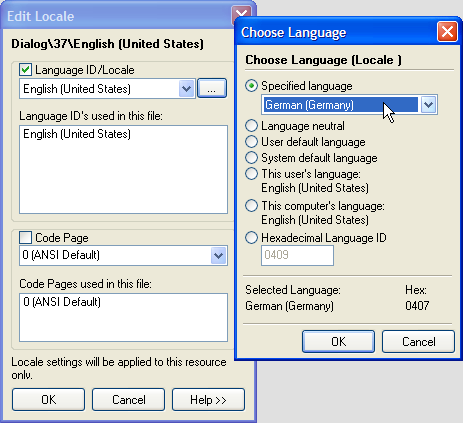
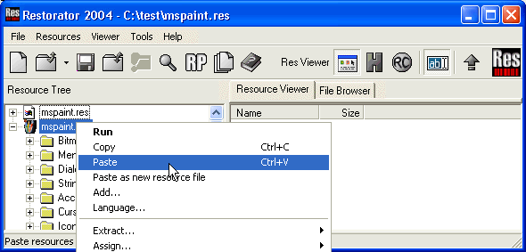
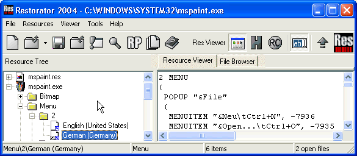

|
Help Overview Manual Tutorials FAQ Purchase Restorator Web |
Restorator
Translation Tutorial
Tutorial: Translating MS Paint with multi-language support
| Note: the screenshots in this tutorial originate from an older version of Restorator. |
This time we will enable multi language support. The application will adjust the language according to the operating system language.
Use "MSPaint.exe" in "C:\Program Files\Accessories" (Windows 95/98/ME) or in "C:\Windows\system32" (Windows NT/2000/XP).
Again, respect the copyright of programs. You should only modify it (and other programs) for your private use.
The principal idea is to first create a version in a different language and than merge several languages together.
- Translate program just like before do not save modifications yet.
- Right-click on mspaint.exe
-> Res Files -> Save ... and select save:

In the dialog check save modified resources only. This will ensure you only include the resources that need to be duplicated because they got modified during the translation.

- Now you load the resource file mspaint.res in the editor
- to assign an language to this resource. Right-click and select "Language..."
- Change language to German (Germany)

This will recursively change the language of all resources.
- Transfer the modified resources
with the new language in the exe file with the old language to include
both resources in the exe file. Load the old application in Restorator
so you have the new res file and the old exe file open. Copy the .res
file and Paste in the old file (via pop-up menu)


- Done. This is how the resource
looks like that exists in 2 versions:

Your application now adapts automatically to different OS languages.
- Remark:
The modification is effective once you run it on a operating system in German. The configuration setting region/Locale is not sufficient to switch the language.
Copyright 1997-2007 by Bome Software